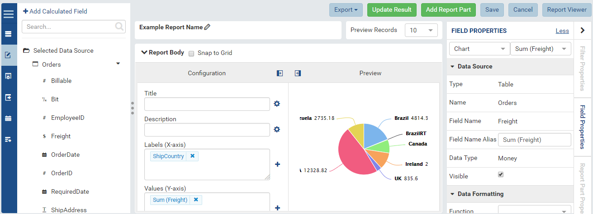
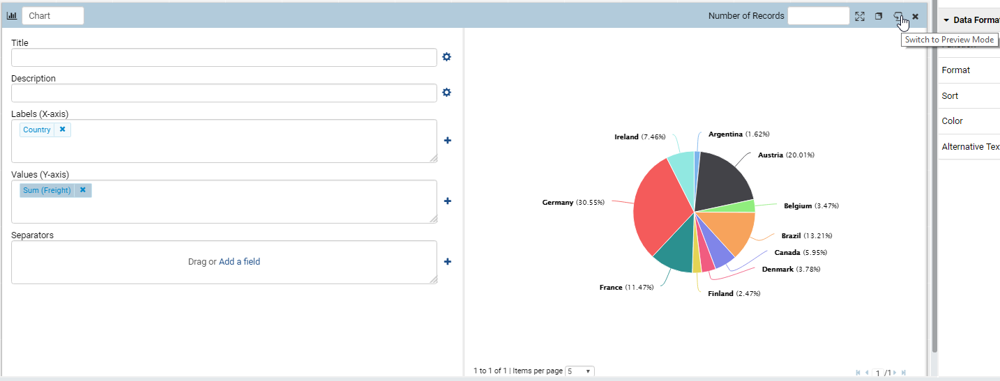

Report Designer/Report Part Menu¶
This guide will assist users in navigating report parts efficiently and with ease. There are a number of options that are the same for report parts throughout the system, this guide will explore each of those options.
Note
This page is currently under construction. Please feel free to use the information provided on this page while we continue to refine it for your use.
Overview¶
In the report designer, each report part has an associated menu that can be accessed by hovering over the report part near the top. The menu looks like what is displayed below:
{kind=link}
Fig. 324 Report Part Menu has both Configuration and Preview sections
Preview section can be shown or hidden by tick or untick on Show Preview section in Configuration Mode check box in Setting > Data Setup > Advanced Settings > Other tab, see Update Others Settings for more details.
{kind=link}
Note
Collapsing the preview mode will suspend database calls until the user expands it or flips the tile
The report part menu can also be accessed by right clicking on the report part to bring up the same offered options.
Fig. 326 Report Part Right Click Menu
Menu Options in Report Designer¶
Below is a list of the available options:
Full Screen – Takes the report part into a full screen mode effectively hiding the Filter tab, but offering more room for design or viewing purposes.
Fig. 327 Report Part in Configuration Mode and Full Screen
Copy – Creates an identical copy of a report part. Makes it easier to add additional report parts with the same data structure and format to be edited quickly.
Fig. 328 Report Part copied into two identical report parts
Switch to Configuration/Preview Mode – The method of switching from previewing a report part in the design real estate of the report and the actual underlying configuration of the report part itself. This flipping mechanism can also be found on the Dashboard module of Izenda as each report part can be individually flipped and manipulated through this same functionality.
Fig. 329 Clicking this button will flip the report part back to the report design real estate
Delete – Removes a report part from the report. This will fully remove the report part from the definition of the report. There is no way to undo this action.
Fig. 330 Clicking this button will delete the selected report part